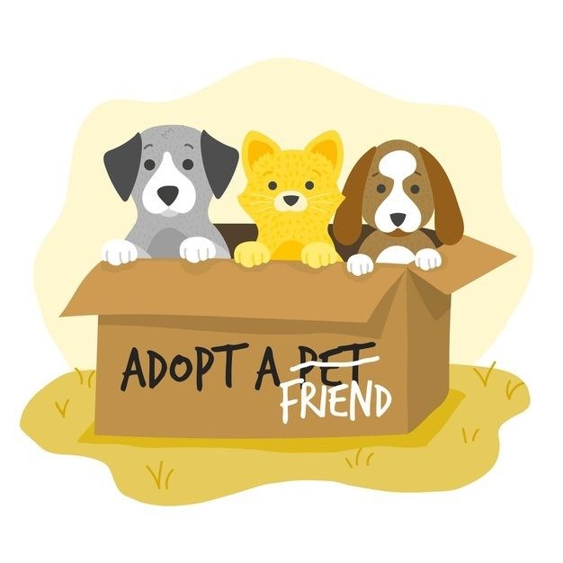
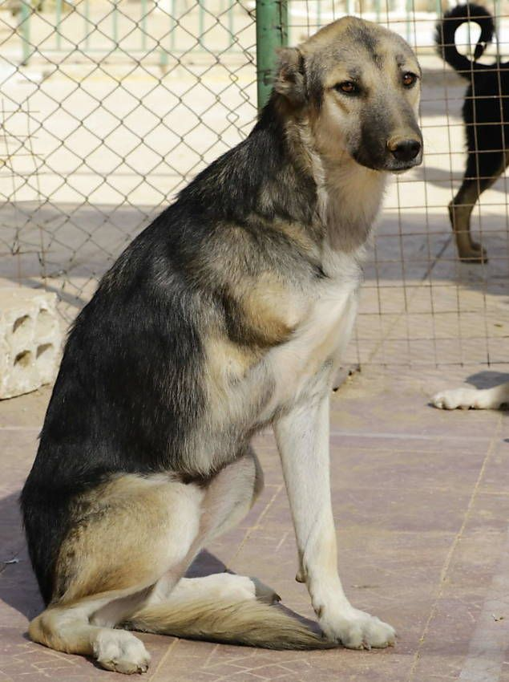
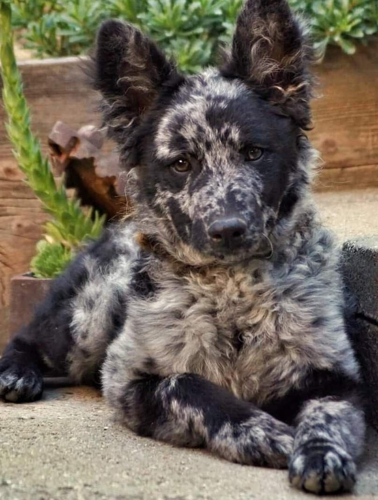
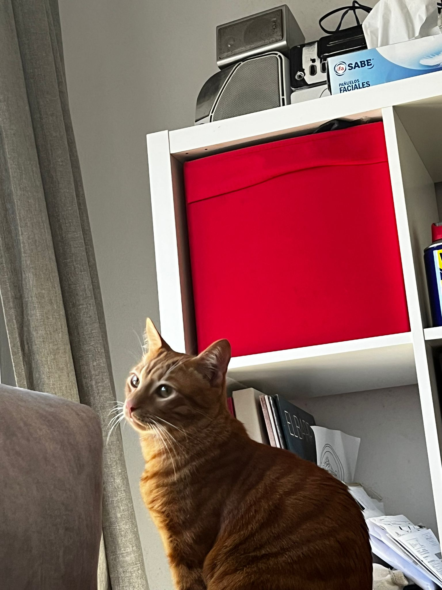

Dejando Huella
Inicio
Servicios
Sobre nosotros
Nuestros peludos
Hazte de la manada
Blog
¡Estos pequeños necesitan tu ayuda!

Perros

Leo
Sexo: macho
Edad: 7 años

Luna
Sexo: hembra
Edad: 5 meses
Gatos

Kiyo
Sexo: macho
Edad: 1 año
Nala
Sexo: hembra
Edad: 2 años